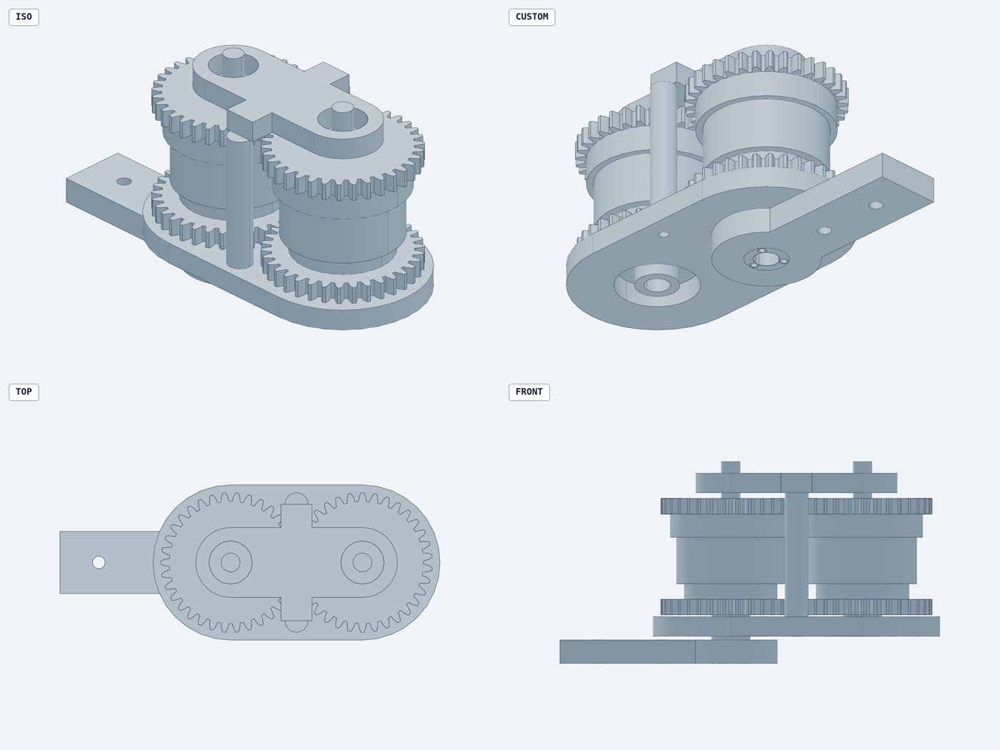

Engineers have simulated beyond geometry for decades. FEA, multibody dynamics, thermal and tolerance analysis are all mature and widely used. What's rarely streamlined is the path between them. Typically the geometry gets drawn first, then handed to an analyst. The analysis runs late, on a snapshot, in a different tool, and the findings come back as a list of changes to make by hand. Each check is a separate project, so it runs a few times per design, not every time the design changes.
Software got past this with CI/CD. Every change runs the whole test suite automatically, from the first commit, so nobody waits for a separate QA phase. Hardware should work the same way: design and simulation as one continuum, where changing a parameter re-runs the model, the physics and the manufacturability checks together. With the assembly defined as code and AI agents doing the engineering work, that loop can run from day one instead of arriving late. Here's a case study. We took a novel mechanism from a research paper, handed it to agents working in the PUNKFAB loop (define → simulate → verify), and in one working session got back a simulated, verified, printable assembly. Six defects were found and fixed before anything physical existed, and three of them were in no geometry at all.
The idea
A variable chain motor, from Tada et al. at the University of Tokyo, IROS 2025 (doi:10.1109/IROS60139.2025.11246199). Put spur gears on both the rotor and the stator of ordinary BLDC motors and mesh them. The chain then runs as one motor, from one driver and one encoder. The clever part is the stator gears: a motor can orbit its neighbour on a link and its commutation never notices. The motor bends around a joint instead of sitting beside it. They built a four-cell version into a humanoid elbow. We set out to build the smallest chain that bends, two cells on drone motors, as printed parts.
01 / Read: the abstract isn't the paper
The agent's first read, from the abstract alone, got the mechanism wrong. It guessed at how the gears couple the motors, and both guesses were wrong. With the full paper in hand, it extracted the real topology: rotor gears lock the rotor angles, and stator gears only at the hinge. It also pulled out the switching circuit and every published number. Then it wrote a model of the motor and checked it against the paper's own table of torque and speed across wiring configurations. It matched within 0.2%. Nothing got built until the model agreed with the source.
02 / Define the assembly
The design is the assembly, not a pile of parts. Six printed parts, four joints and two gear couplings are all generated from one set of parameters, so geometry, joints and physics move together when a number changes. The agent also checked its design against what the repo already knew. Our measured records for the 2204 motor say its shaft exits on the mount side, not the top, and it redesigned the rotor gear as a cap bonded over the bell before anything went further.

03 / Simulate: three defects in no geometry
The same parts were loaded into a physics simulation (MuJoCo) on a real joint tree, with the gear meshes as constraints. Three findings came out that no CAD model contains:
- The second motor has to be wired reversed. The gear mesh spins it backwards, so two of its phase leads must be swapped. Wired straight, the two motors cancel to zero output torque: they draw current and don't move. The paper never mentions this.
- The bend is torque-neutral only with exactly matched gear ratios. At stall the hinge feels 0.000 mN·m. One stator gear a single tooth off gives 0.401 mN·m, exactly as virtual work predicts. Without stator gears, a 155° bend scrambles commutation completely.
- Bending fast loads the controller. The orbiting rotor turns twice the hinge angle, so the output servo must supply 2·I·φ̈ during elbow acceleration. The sim matches the formula exactly, and the controller spec now includes it.

04 / Verify: bring every check you can find
For the verify stage, the agent pulled in outside tools. It rebuilt the parts under text-to-cad, the most popular AI CAD toolkit (about 16k stars, MIT licensed), and ran its checks. They caught three manufacturing bugs our own checks had passed:
- Zero gear backlash: 0.000 mm between the teeth. An overlap check counts touching as passing, but printed gears like that bind.
- 0.11 mm walls, where screw holes broke into a bore. Both parts were valid solids that couldn't be printed.
- A cap that needs support in every orientation, until a fused dowel became a press-fit steel pin.
The agent fixed all three, re-ran the checks, and re-ran the physics to confirm nothing else moved. Rendering and looking after every change also caught one of the agent's own errors: a kinematic declaration that silently left half the motor behind at a 90° bend.

A geometry tool on its own covers one stage. text-to-cad is good at what it does: its checks produced clean, printable parts. But the three defects that decide whether this motor turns at all aren't in the geometry, so no amount of better CAD finds them. Faster CAD alone speeds up one stage of the pipeline. The bigger win is connecting the stages so every check runs every time.

Hardware CI/CD
What came out isn't just six STL files. It's a checked build: everything that was verified before those files existed, and that re-runs whenever a parameter changes.
- a model validated against the source paper
- an assembly with real joints and gear couplings
- physics results the controller spec depends on, including a wiring rule
- manufacturability checks
- a set of standing rules for next time
Today each stage runs with one command. The model report, the CAD build with its design rules and interference checks, and the physics checks each re-run from the same parameters. Wiring them to run on every commit, the way software CI does, is the next step. The geometry is what you send to the printer; the rest of the loop is why it should work when it comes off.
| Defect | Found by | Stage |
|---|---|---|
| Second motor must be wired reversed (not in the paper) | physics simulation | simulate |
| Hinge only neutral with matched gear ratios | physics simulation | simulate |
| Hinge acceleration loads the output servo | physics simulation | simulate |
| Zero gear backlash | clearance query (text-to-cad) | verify |
| 0.11 mm walls into a bore | printability tool (text-to-cad) | verify |
| Cap needs support in every orientation | orientation search (text-to-cad) | verify |
| Parts printed to find all six: 0 | ||
Checks compound. Every defect found once becomes a standing rule. Gear-mesh clearance and minimum-wall rules now run on every build, and sampled wall thickness and print orientation are next. The next assembly never pays for these lessons again. Backlash, hub geometry and pin fit are parameters now, not fixes, so the design can be swept across a whole family of chain motors.
Who did what
A person chose the paper and set the scope; the agents did the engineering. We picked the paper, asked for a two-cell version, and asked for an outside cross-check. Agents working through our skills did the rest:
- reading the paper and building a model validated against it
- the parametric assembly, and simulating it
- running and adopting third-party verification tools
- fixing what those tools found, and re-verifying
Not everything moves into software. Friction, wear, thermal limits and print variation still have to be measured, and in keeping with the simulation is a cache of reality, we flag what hasn't been yet: the kinematic and torque results are checked against the published paper, but the efficiency curves still use placeholder loss values until the bench measures them. The first print is where calibration starts, not where debugging starts.
Everything is open in punkfab/robot-actuators under chain-motor/, and the step-by-step engineering notes, with timings, are on dnuke.com. Got a paper, a sketch, or an assembly that should be proven before it's built? Start a build →